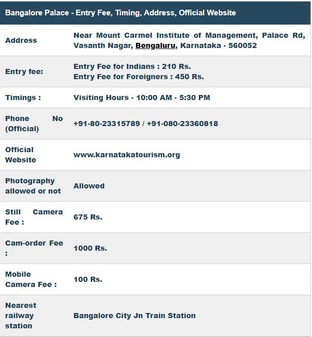

In the midst of the hustle and bustle of the electronic city of Bengaluru, Karnataka, lies the majestic Bengaluru Palace. Enclosed by beautiful gardens, this palace not only attracts tourists in large numbers, but is also a preferred destination for important events and cultural programs. The wooden structure of the palace, with splendid carvings both inside and outside depicting different architectural styles, is reminiscent of the royal culture it represents.
Rev. Garrett, the principal of the Central High School in Bengaluru, started construction of the palace in 1862, which was completed in 1944. The ownership of the palace changed hands several times, from the Reverend to Chamarajendra Wadiyar of the Wadiyar Dynasty, to the British Empire. One version of the history says that on one of his trips to England, Chamarajendra Wadiyar was quite enchanted with the Windsor Castle, and that this inspired him to build the Bengaluru Palace in the Tudor architectural style. However, the audio tour of the palace has no mention of the Castle. Presently, Bangalore Palace is under the ownership of the descendant of the Mysore Royal Family, Srikanta Datta Narasimharaja Wadiyar. He opened the palace in 2005 for public viewing. The entry fees and other charges so collected are used for the maintenance and upkeep of the palace. The Wadiyars were believed to be great hunters, and Jayachamaraja Wadiyar was considered to have hunted around 300 tigers and several elephants. One such elephant head is mounted at the entrance of the palace. Stools made of elephant feet, vases of the elephant trunk, and trophies of elephant hunting are displayed in the palace. The palace complex, including the gardens, is spread over 454 acres, of which the palace has a floor area of 45,000 sq. ft. The Tudor-style architecture is eminent from the turrets, the battlements on the fortified towers. The furniture has a touch of Victorian, neo-classical and Edwardian styles. The interior of the palace is magnificently decorated with floral motifs, cornices and wood carvings. The ceiling is ornamented with relief paintings. There are 35 rooms in the palace, along with a manual lift. Wooden fans from General Electric and imported stained mirrors and glass are also used. There is an open courtyard on the ground floor, which is covered with blue-coloured fluorescent ceramic tiles and has a ballroom that held private parties of the royals. Decorated with paintings, a staircase leads to the elaborate Durbar hall on the first floor. This was used as an assembly hall by the king. The hall is beautified with Gothic-style stained-glass windows, while profuse use of the yellow colour is eminent on the walls and sofa sets. An area separated by screens was used for the ladies to attend assembly proceedings. Paintings from the mid-nineteenth century, including some of Dutch and Greek origin, adorn the walls of the palace. It also contains a dining table, originally belonging to Sir Mirza Ismail, the Diwan of Mysore, and has a mother pearl inlaid using Chinese lacquer. Presently the palace is going through extensive renovation under the supervision of Srikanta Datta Narasimharaja Wadiyar. Out of a collection of around 30,000 photographs, about 1,000 will be restored for exhibition. It is also planned to display garments and silks used by the royal family. One of the rooms has been used as a boutique for this purpose. Many other plans are under consideration, such as renting out the ballroom for parties; and sale of photographs, articles, and silk scarves to tourists. Work on illuminating the palace is in progress, along with the use of Mexican grass in the gardens. Many cultural events and social functions, such as marriage ceremony, exhibitions, musical concerts, sports events, etc., are being conducted in the palace grounds for the past few years. Artists like Elton John, Backstreet Boys, Akon, and Iron Maiden, to name a few, have performed here. There is an amusement park, better known as Fun World, inside the palace complex. An audio tour of one-hour duration is available in seven languages: English, French, German, Italian, Spanish, Hindi and Kannada.
Location and how to reachThe palace is situated between Sadashivanagar and Jayamahal in the heart of Bangalore city. The city of Bangalore can be approached from any of the metro cities by road, rail or air. Many international flights also connect directly to the Bangalore city. After reaching Bangalore, one can take the metro, bus, or hired cars to reach the Bangalore Palace.
